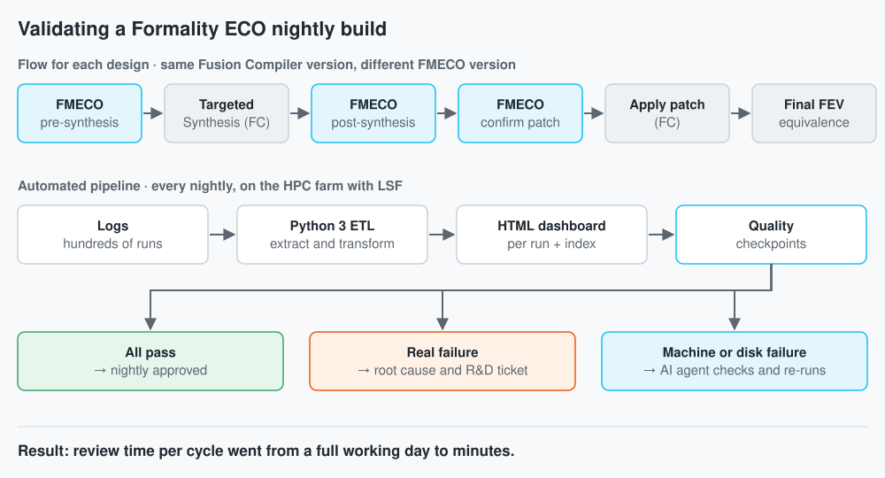
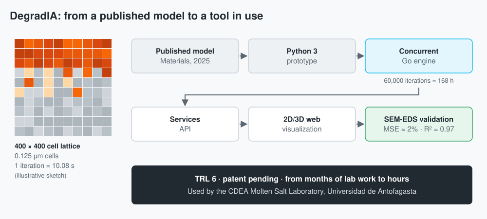
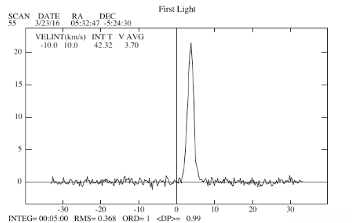
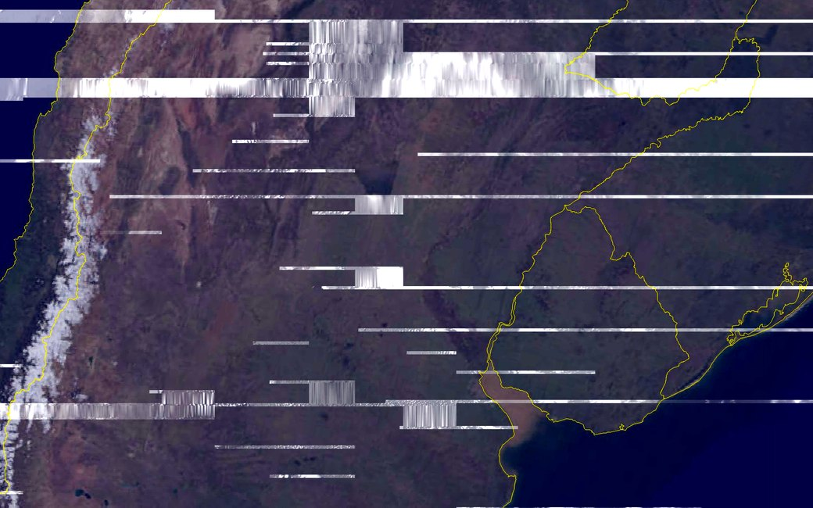
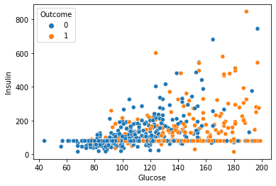
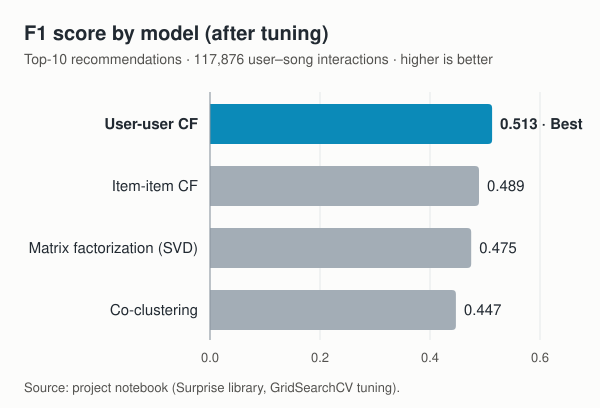

Formality ECO nightly validation
Automated validation of every nightly build of a chip-verification tool, with Python ETL, an HPC farm and an AI agent.
- A day → minutes
- Python ETL
- HPC · LSF
- AI agent
Electronics engineer · M.Sc. · Viña del Mar, Chile
Thirteen years from the antenna to the software: FPGA spectrometers for radio-telescope receivers at the mm-Wave Lab UChile, eight years of chip synthesis and formal verification at Synopsys, and a Go and Python simulation platform now used in materials research. Now building RF/SDR systems end to end.
Open to work: Software Engineering, Space, Defense · Available to work in Chile and to relocate to Spain
Three projects documented in depth: the challenge, how I reached the solution, my contribution and the results.

Automated validation of every nightly build of a chip-verification tool, with Python ETL, an HPC farm and an AI agent.

Go and Python platform that simulates steel corrosion in molten solar salt, validated against lab data and now used by a research lab.

FPGA back-end that digitally separates the sidebands of an 80–116 GHz receiver, with first light on the Orion Nebula.

Seven step-by-step guides for my RTL-SDR Blog V4L station in central Chile, with the exact commands and results, including what did not work.


I'm an electronics engineer with more than ten years across FPGA signal processing, chip verification and large-scale data analysis. My strength is combining high-performance software in Go and Python with RF digital signal processing, and I like owning a problem from the measurement to the tool that ships.
I led the technical work of Synopsys's Product Validation team in Chile and published research on radio-astronomy receivers in Astronomy & Astrophysics and SPIE. Today I want to bring that experience to RF, SDR and space systems.
04 · Contact
I'm open to RF, SDR and signal-processing roles, and available to relocate to Spain. Email or LinkedIn is the fastest way to reach me.